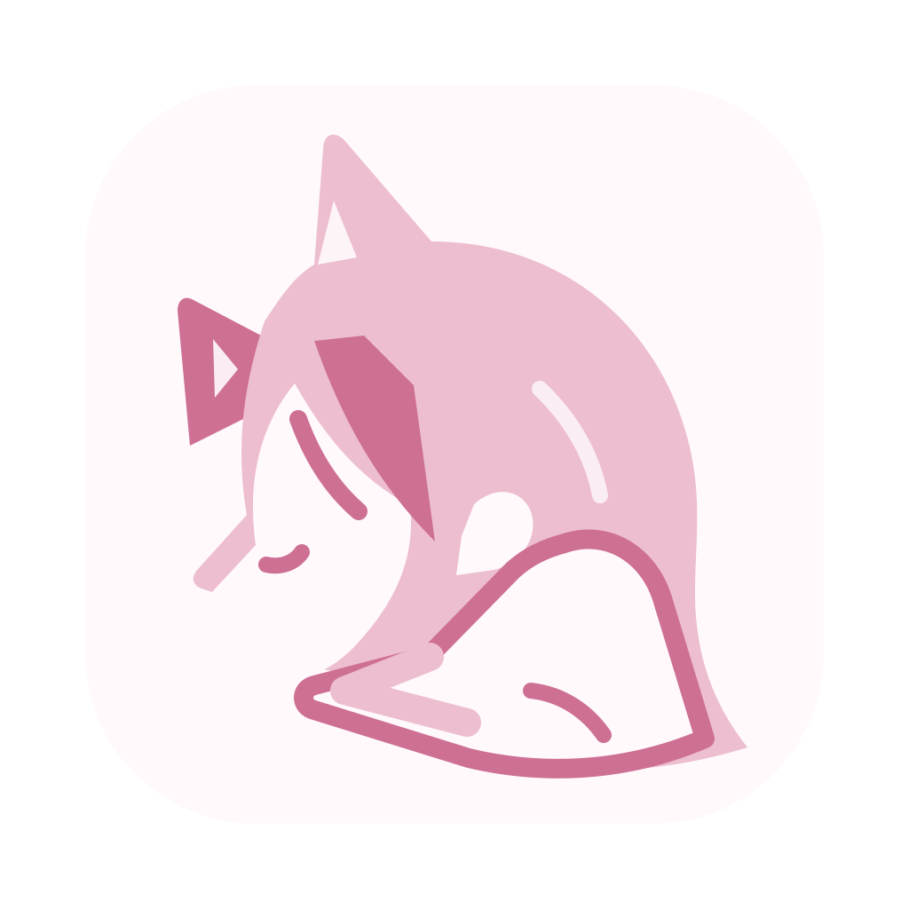
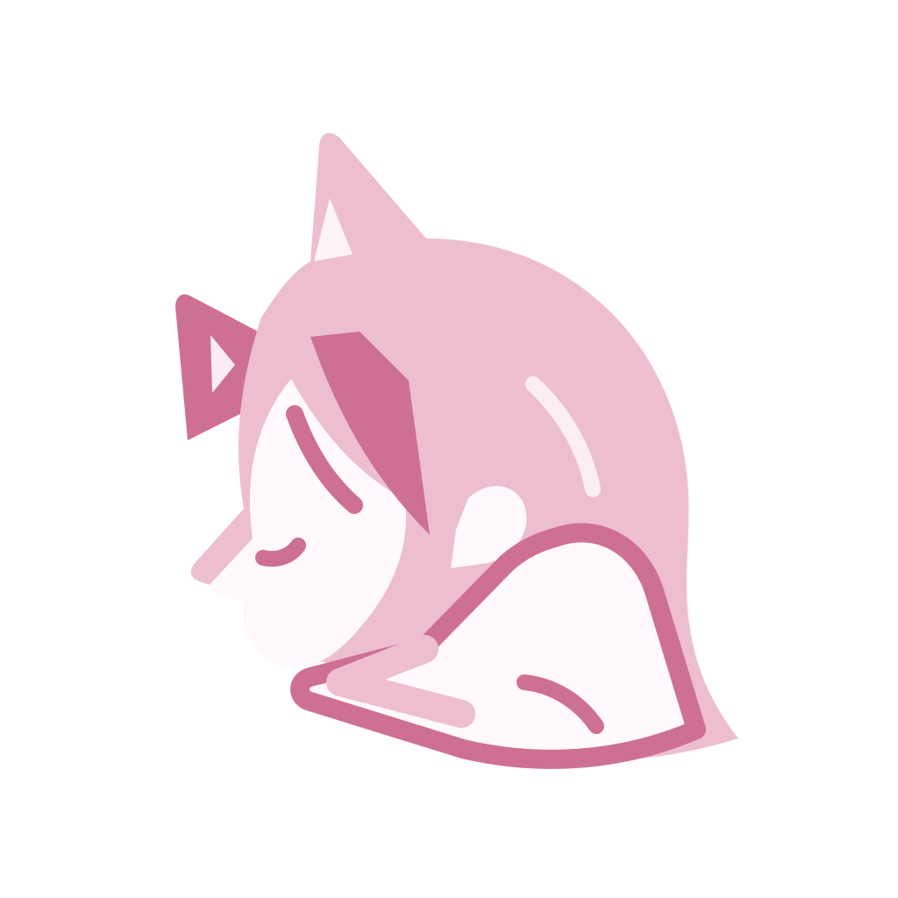
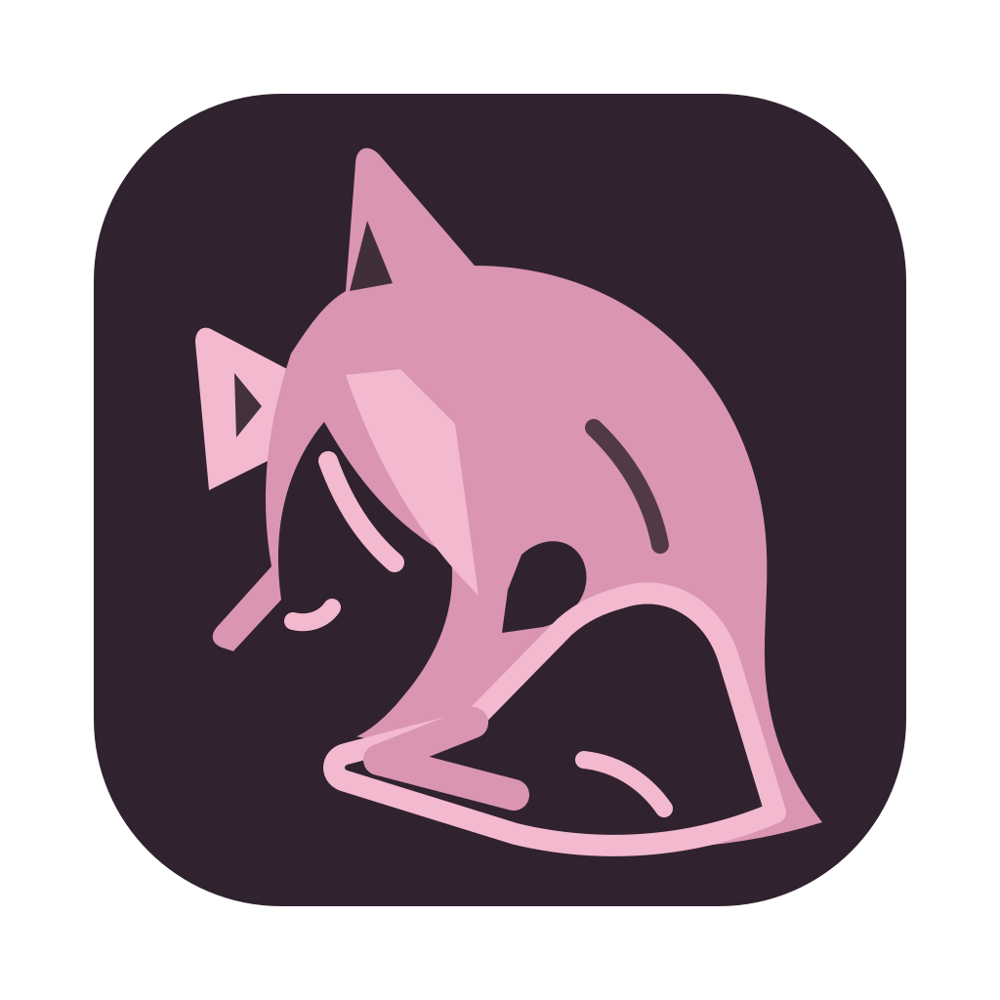
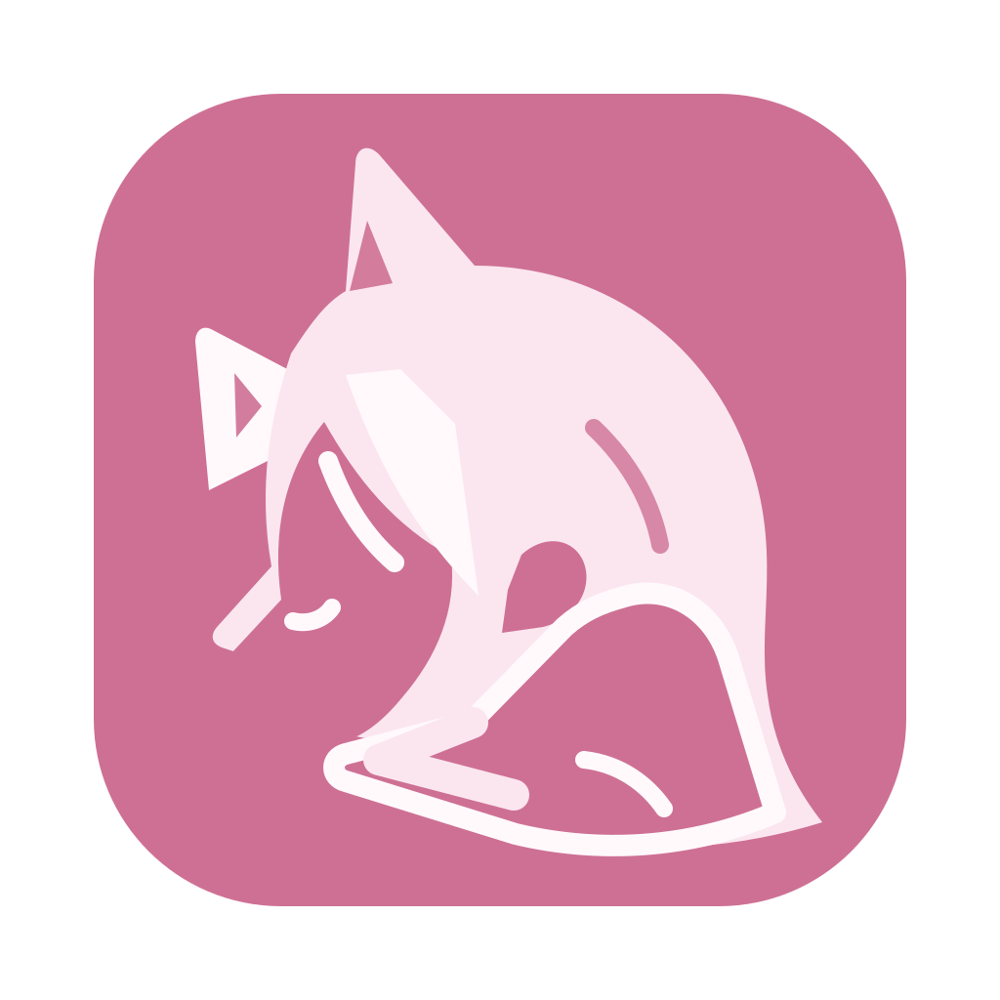
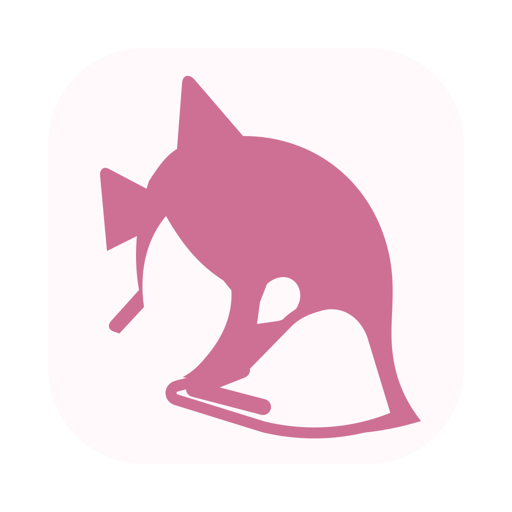

粉雾 · 主图标 SVG ↗

推荐默认版本。雾白底衬托双色剪影，适合 Dock、启动台与应用列表。

aimy粉雾风格库
今天也在这里。
每一种感知，都有独立的开关。
开启后，才开始听你说话。
开启后，才查看你选择的屏幕。
开关仅演示界面状态，不调用任何设备。
使用你自己的模型服务，按需要连接。
此处展示字段样式。请勿在设计预览中输入真实密钥。
可交互设计提案 · 示例对话 · 未连接模型或设备
聊天、设置与桌面角色仍按独立窗口表达。
01 / BRAND
猫耳、垂落的发梢、轻靠衣袖的侧脸。
保留参考图的亲近感，用重新绘制的矢量轮廓承接。
推荐默认版本。雾白底衬托双色剪影，适合 Dock、启动台与应用列表。

深梅灰底，樱粉轮廓。作为夜间品牌资产备选，不随 UI 自动替换 Dock 图标。

适合活动封面与品牌头像。UI 持续使用同一主标记，保持辨识一致。

16 px小尺寸减少发丝细节；菜单栏使用独立单色形状。矢量母版、透明 PNG 与 macOS ICNS 一并交付。
02 / INTERFACE
保留 AIRI 的桌面角色、聊天和设置窗口结构。
视觉统一落在色彩、字体、控件与状态表达上。
角色本身保留独立表现空间。控制条轻量、默认安静，感知开启时才出现明确状态。
白天轻盈，夜晚柔和。
减少界面的移动与过渡。
音色与正式角色一起确认。
设置页保留原版分组与导航，逐项映射语义色。品牌色只点亮当前选择与主要动作。
03 / COMPONENTS
组件共享同一套语义变量。
切换右上角主题，即可查看整套夜间状态。
默认 40 px 高；桌面图标按钮至少 32 px 热区。默认、悬停、按下、禁用、加载与焦点态齐备。
只展示输入样式，本预览不保存。
请输入完整地址，例如 https://example.com/v1
权限状态必须有文字；成功、提醒与危险色专门表达状态，不用来装饰。
界面统一使用线性图标。品牌剪影仅用于图标、头像和空状态，不替代功能图标。
一件小事、一张图片，或者只是说声你好。
来源：一次对话 · 示例内容
来源、纠正、删除清楚可见。自动保存或先确认继续待答，不由视觉稿代替决定。
04 / DESIGN SYSTEM
粉色用于品牌与交互，雾白承接内容。
正文、按钮与关键控件分别校验对比度。
SF Pro / 苹方 · 正文 1.6 行高 · 对话 1.8 行高
4 px 基础网格 · 120–260 ms 过渡 · 遵循减少动态效果
浅粉留给氛围，深粉留给操作。正文使用梅灰色，长时间阅读更清楚。
麦克风与看屏独立控制，默认关闭。状态文案具体，不用“她很想你”替代授权。
不在每个角落堆猫爪、爱心与装饰。品牌轮廓负责记忆，界面负责好用。